All Roofing Supplies
119 different product types • choose a colour or finish to change the photograph
A broad range of genuinely different roofing product styles — including Spanish, Welsh, Brazilian, Canadian, Chinese, Cornish, fibre-cement and reclaimed slates, plus tiles, roofline, felt, lead, ventilation, windows and accessories.
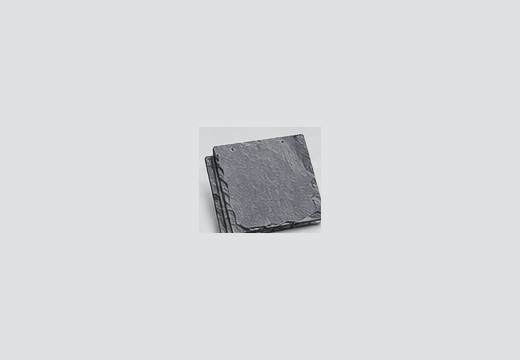
Slates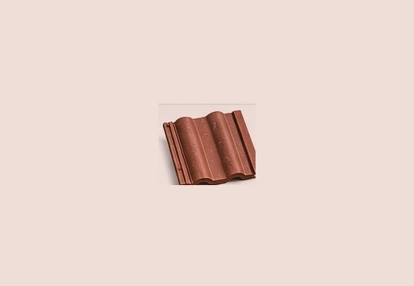
Roof Tiles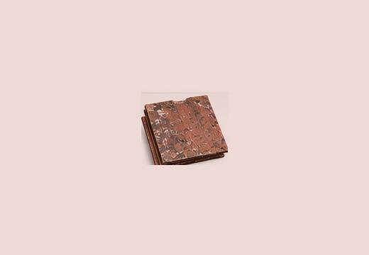
Reclaimed Tiles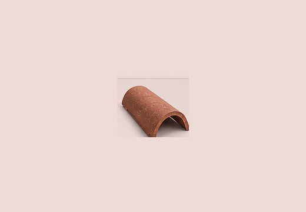
Ridge, Hip & Verge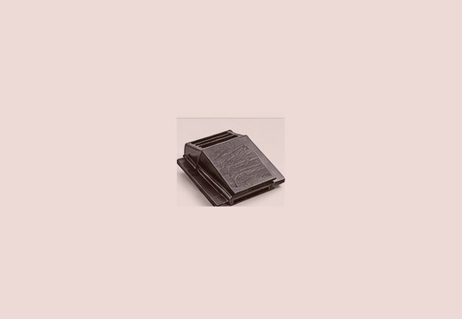
Ventilation & Dry Fix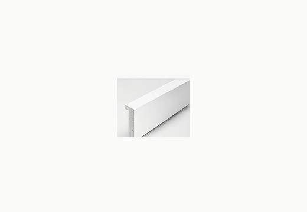
Fascia, Soffit & Cladding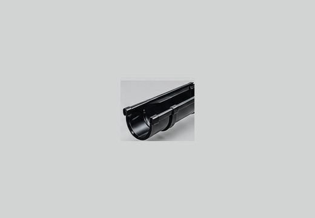
Guttering & Downpipes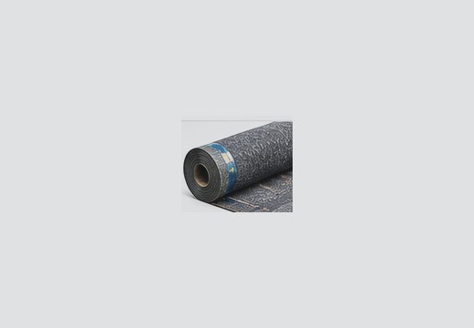
Roofing Felt & Membranes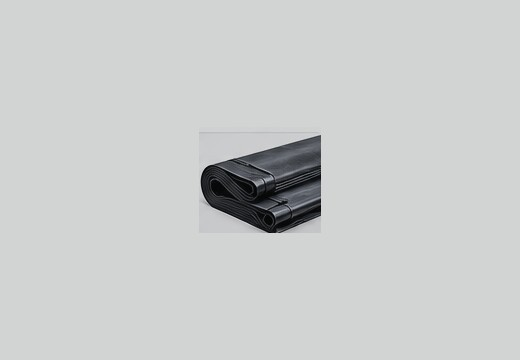
Flat Roofing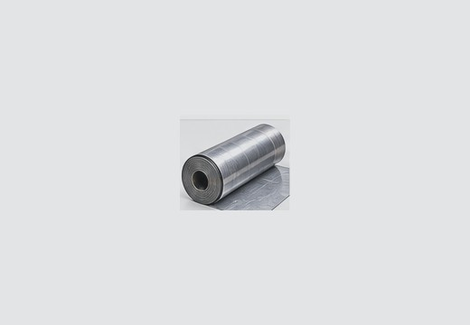
Lead, Flashing & DPC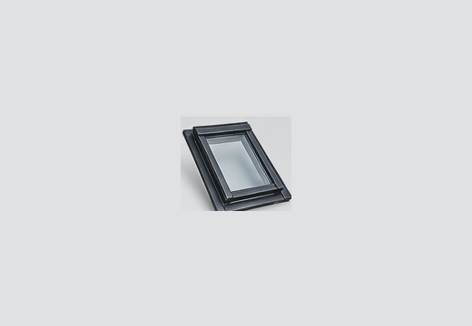
Roof Windows & Accessories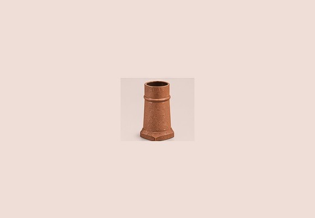
Chimney & Roofing Accessories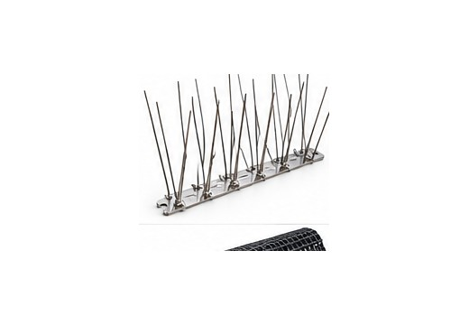
Bird & Gutter Protection119 different product types • choose a colour or finish to change the photograph
Choose an available colour, finish or grade. The photograph changes to match your selection.
Enquire about this product →